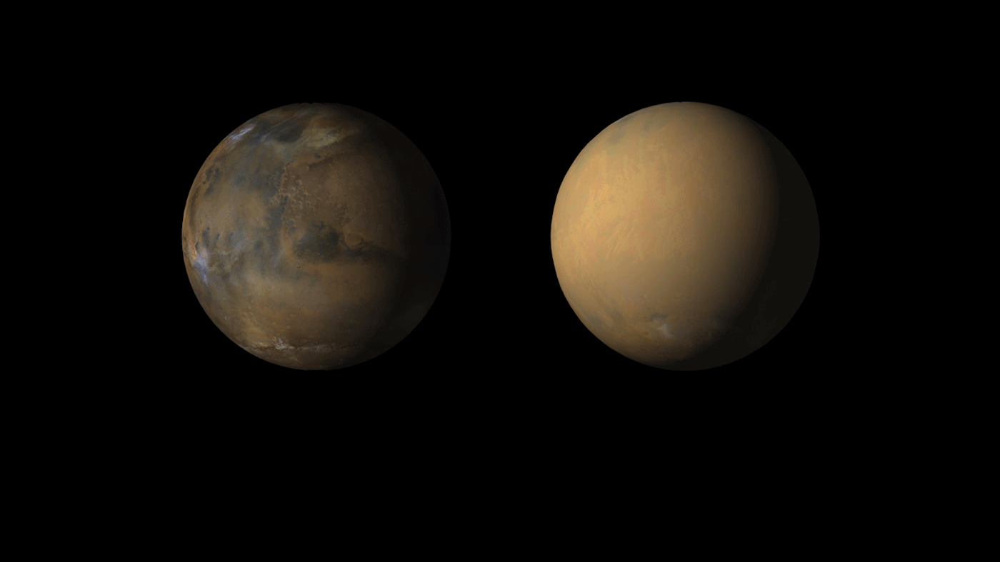

The swiftest
twin sister
homeworld
red planet
king of All
jewel of system
ice giant
the farthest planet
The smallest planet in our solar system and nearest to the Sun, Mercury is only slightly larger than Earth's Moon. From the surface of Mercury, the Sun would appear more than three times as large as it does when viewed from Earth, and the sunlight would be as much as seven times brighter.
Day: About 59 Earth days (to complete one rotation on its axes)
Mercury's surface temperatures are both extremely hot and cold. Because the planet is so close to the Sun, day temperatures can reach highs of 800°F (430°C). Without an atmosphere to retain that heat at night, temperatures can dip as low as -290°F (-180°C).
Despite its proximity to the Sun, Mercury is not the hottest planet in our solar system – that title belongs to nearby Venus, thanks to its dense atmosphere. But Mercury is the fastest planet, zipping around the Sun every 88 Earth days.
Venus is the second planet from the Sun, and our closest planetary neighbor. It's the hottest planet in our solar system, and is sometimes called Earth's twin.
Venus is a bit smaller than Earth. It's 7,521 miles (12,104 kilometers) across, and Earth is 7,926 miles (12,756 kilometers).
Venus is the second planet from the Sun, and Earth's closest planetary neighbor. Venus is the third brightest object in the sky after the Sun and Moon. Venus spins slowly in the opposite direction from most planets.
Venus is similar in structure and size to Earth, and is sometimes called Earth's evil twin. Its thick atmosphere traps heat in a runaway greenhouse effect, making it the hottest planet in our solar system with surface temperatures hot enough to melt lead. Below the dense, persistent clouds, the surface has volcanoes and deformed mountains.
Earth – our home planet – is the third planet from the Sun, and the fifth largest planet. It's the only place we know of inhabited by living things.
Distance from Sun: 93,327,712 miles / 150,196,428 kilometers
Earth has a very hospitable temperature and mix of chemicals that have made life abundant here. Most notably, Earth is unique in that most of our planet is covered in liquid water, since the temperature allows liquid water to exist for extended periods of time. Earth's vast oceans provided a convenient place for life to begin about 3.8 billion years ago.
Mars – the fourth planet from the Sun – is a dusty, cold, desert world with a very thin atmosphere. This dynamic planet has seasons, polar ice caps, extinct volcanoes, canyons and weather.
If Earth were the size of a dime, Mars would be about as big as an aspirin tablet.
Mars is one of the most explored bodies in our solar system, and it's the only planet where we've sent rovers to roam the alien landscape. NASA missions have found lots of evidence that Mars was much wetter and warmer, with a thicker atmosphere, billions of years ago.
Mars was named by the Romans for their god of war because its reddish color was reminiscent of blood. The Egyptians called it "Her Desher," meaning "the red one."
Jupiter is a world of extremes. It's the largest planet in our solar system – if it were a hollow shell, 1,000 Earths could fit inside. It's also the oldest planet, forming from the dust and gases left over from the Sun's formation 4.5 billion years ago. But it has the shortest day in the solar system, taking only 10.5 hours to spin around once on its axis.
Jupiter's atmosphere is made up mostly of hydrogen!
Jupiter's signature stripes and swirls are actually cold, windy clouds of ammonia and water, floating in an atmosphere of hydrogen and helium. The dark orange stripes are called belts, while the lighter bands are called zones, and they flow east and west in opposite directions. Jupiter’s iconic Great Red Spot is a giant storm bigger than Earth that has raged for hundreds of years.
The king of planets was named for Jupiter, king of the gods in Roman mythology. Most of its moons are also named for mythological characters, figures associated with Jupiter or his Greek counterpart, Zeus.
Saturn is the sixth planet from the Sun, and the second-largest planet in our solar system.
A year on Saturn is about 29 Earth years.
Like fellow gas giant Jupiter, Saturn is a massive ball made mostly of hydrogen and helium. Saturn is not the only planet to have rings, but none are as spectacular or as complex as Saturn's. Saturn also has dozens of moons.
From the jets of water that spray from Saturn's moon Enceladus to the methane lakes on smoggy Titan, the Saturn system is a rich source of scientific discovery and still holds many mysteries.
Uranus is the seventh planet from the Sun, and it has the third largest diameter of planets in our solar system. Uranus appears to spin sideways.
Uranus has a unique tilt that makes it appear to spin sideways.
Uranus is a very cold and windy world. The ice giant is surrounded by 13 faint rings and 28 small moons. Uranus rotates at a nearly 90-degree angle from the plane of its orbit. This unique tilt makes Uranus appear to spin sideways, orbiting the Sun like a rolling ball.
Uranus was the first planet found with the aid of a telescope. It was discovered in 1781 by astronomer William Herschel, although he originally thought it was either a comet or a star. It was two years later that the object was universally accepted as a new planet, in part because of observations by astronomer Johann Elert Bode.
Neptune is the eighth and most distant planet in our solar system.
A day on Neptune is 16 hours.
Dark, cold, and whipped by supersonic winds, ice giant Neptune is more than 30 times as far from the Sun as Earth. Neptune is the only planet in our solar system not visible to the naked eye. In 2011 Neptune completed its first 165-year orbit since its discovery in 1846.
Neptune is so far from the Sun that high noon on the big blue planet would seem like dim twilight to us. The warm light we see here on our home planet is roughly 900 times as bright as sunlight on Neptune.